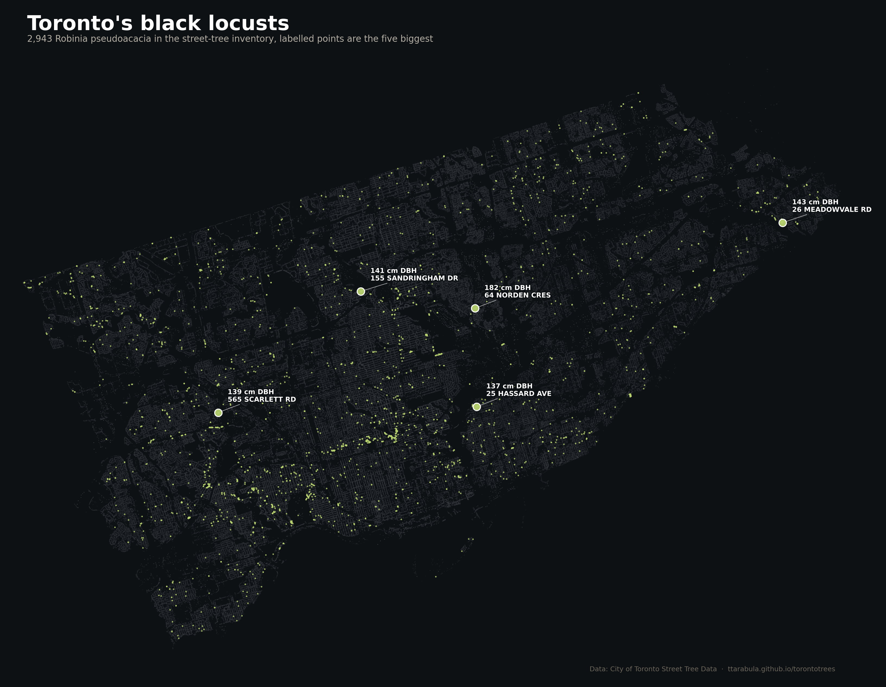
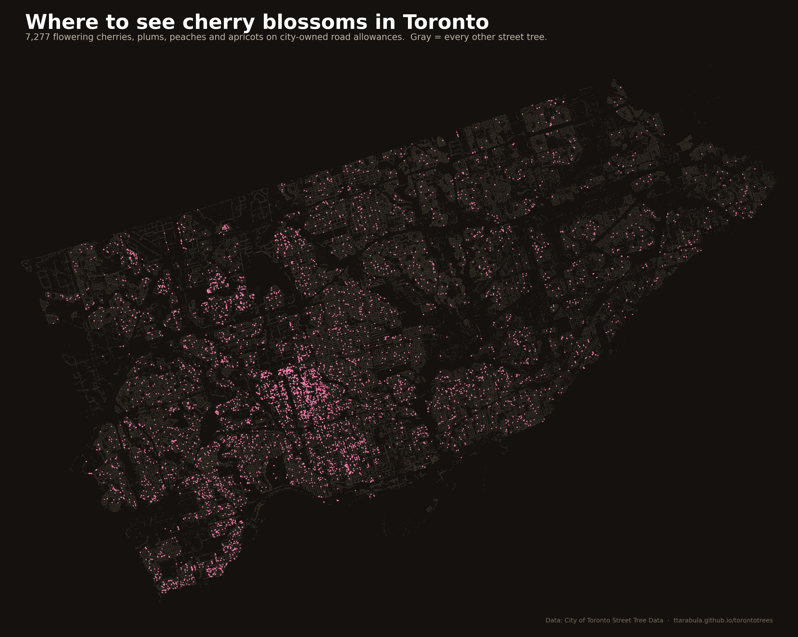
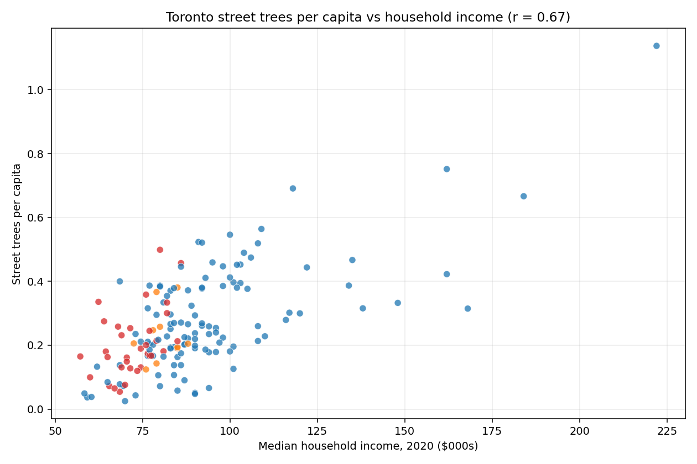

Stories from Toronto's street-tree data
Writing and visualizations based on the City of Toronto's inventory of 689,013 street trees.

Same era, same rowhouses, same gentrification arc. One has 45% canopy, the other 20%. The answer isn't planting — it's built form.

A species portrait: the honey-scented flowers, the wood that outlasts its post, the 182-cm giant in Don Mills, and why it's a perfect laneway tree.

LiDAR-derived canopy data shows the city-wide cover is 25.9%. More importantly: the equity gap is 2.5× bigger on public land than on private land.

A pilgrimage guide. Where to find the city's only pawpaw, its only bald cypress, and twenty other species with five specimens or fewer.

Oakwood Village has 9× more flowering cherry trees than High Park. A spring-pilgrimage guide, with maps and a bloom calendar.

A pointillist portrait of the city, coloured by genus. The street grid, ravines, and one invasive species you can see from space.

Four findings from the data: why per-capita is the right equity metric, a 23× canopy gap between rich and poor neighbourhoods, and a species retirement story 70,000 trees deep.